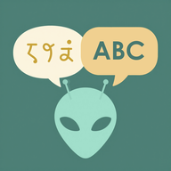

AI-first app studio · Hamburg area, Germany
One founder.
A team of AI agents.
Apps in weeks, not years.
Remindery Apps builds focused consumer apps – for children learning to
read, tell the time and master their vocabulary. Behind them sits a production line
where AI agents research, design, code, test, illustrate and voice, and one human
makes every call that matters.
4apps live in Google Play
2app stores – Google Play and Amazon Appstore
30days from first commit to Play Store for our AI vocabulary app Ox
1,200+commits since July 2026
~4,000automated tests, written and run by agents
6,500+AI-voiced audio clips in production
The AI-first production line
Most studios bolt AI onto an old process. We designed the process around it.
Every step is an agent with a clear role, a versioned skill and a definition of done.
Humans sit where judgment lives: what to build, what to kill, and what is good enough
for a child.
- 01
Discover
Agents mine store data, reviews and search demand to find gaps worth filling – and kill weak ideas with numbers before a line of code exists.
- 02
Concept
A concept agent drafts the product, a critic agent tears it apart. The founder decides.
Human decides
- 03
Build
An agent team works through sequenced work packages in parallel – often overnight, unattended, with a written brief and hard stop criteria.
- 04
Create
Claude writes the stories, a local NVIDIA GPU pipeline paints the illustrations, Amazon Polly gives them a voice.
- 05
Verify
A QA agent runs thousands of tests and audits every build. Every story, picture and voice is approved by a human.
Human approves
- 06
Ship
Store listings, screenshots and copy come from the same line – one core, adapted to Google Play and Amazon.
AI does the work. A human owns the decisions.
AI inside the products

Ox – AI vocabulary trainer
Snap a page of any textbook and Claude on Amazon Bedrock turns it into
structured flashcards in seconds – any publisher, any edition, five languages. Neural
pronunciation from Amazon Polly, speaking practice with
on-device speech recognition: the microphone never leaves the phone.
Fully serverless on AWS Lambda.
Ox in German
Silben Lesen – learning to read
52 stories in two-colour syllable script, 149 practice rounds and
205 watercolour illustrations generated on a local
NVIDIA RTX pipeline and curated by hand. Every word and every
syllable is voiced – more than 6,000 clips.
Silben Lesen in German
Uhr lesen lernen – telling the time
Three learning paths and 76 rounds, with all three ways Germans say the time, spoken
aloud. Live in Google Play and on Amazon Fire tablets, built and shipped in about
five weeks.
Uhr lesen lernen in German
Built on
- Claude by Anthropic
- Amazon Bedrock
- AWS Lambda
- Amazon Polly
- Amazon DynamoDB
- NVIDIA RTX local GPU
- Open image models
- On-device speech recognition
- Flutter
- Google Play
- Amazon Appstore
What's next
Three more apps are in the pipeline, among them a licence trainer for
marine radio and a family shopping list that learns. The line itself is the product:
every app makes the next one faster. Next we are scaling the GPU content pipeline and
taking AI page-reading to more subjects, languages and markets.
Founder
Patrick Steinborn
Product leader with more than 20 years in consumer internet, most of them at VP
level – growth, monetisation, pricing and AI transformation for products used by
millions. He started Remindery Apps in 2026 to prove a simple thesis: with the right
production line, a single person can ship products that used to take a team.
He builds every day, hands-on, with Claude Code as his main tool.
LinkedIn
What we stand for
- Kids first. No ads, no tracking, no dark patterns. Learning progress stays on the device.
- AI where it removes friction. Nobody should have to type a vocabulary list again.
- Humans sign off. Every story, picture and voice a child sees or hears was approved by a person.
- Privacy by architecture. Speech stays on the phone, page photos are processed and discarded.
Let's talk.
Cloud and AI partners, programmes, press: we'd love to hear from you.
kontakt@remindery.de